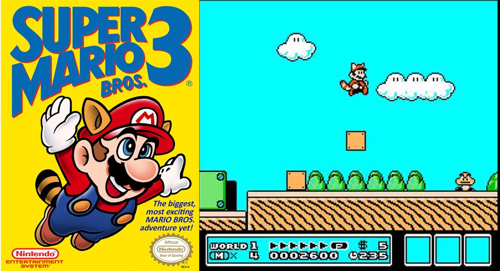
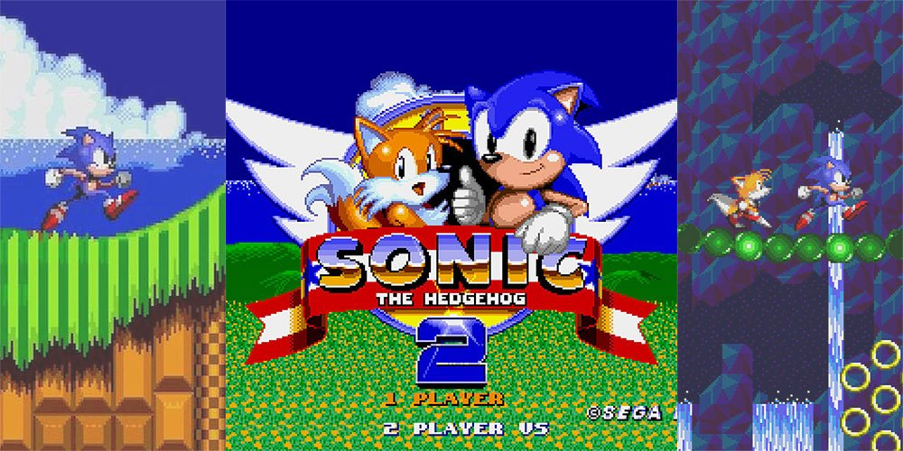
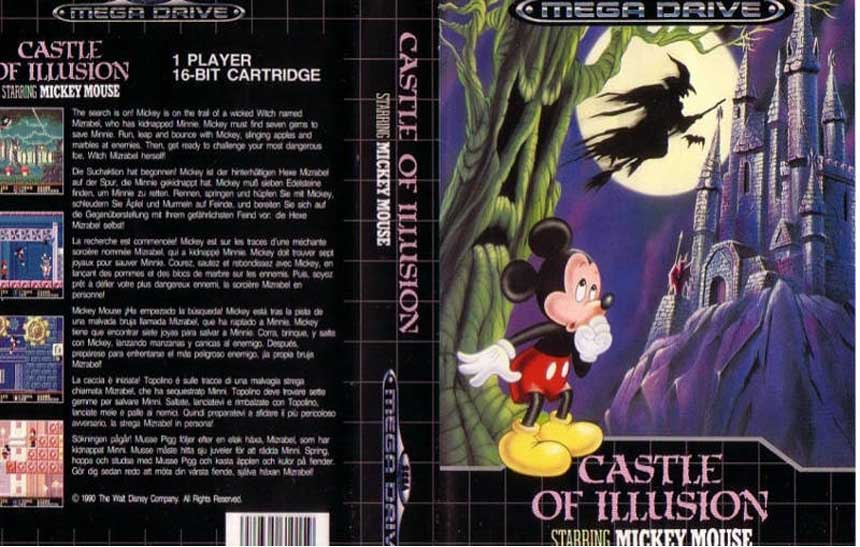
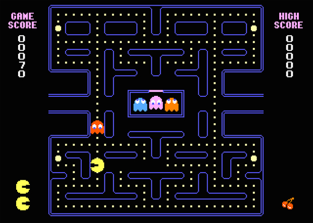
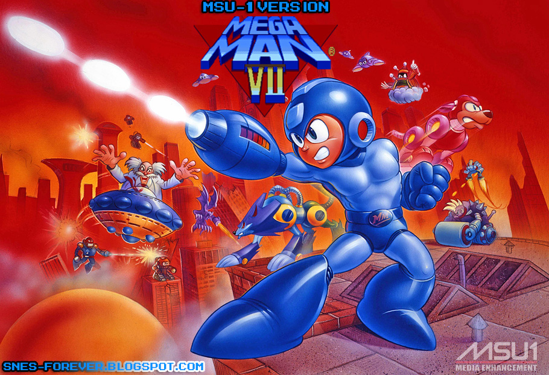
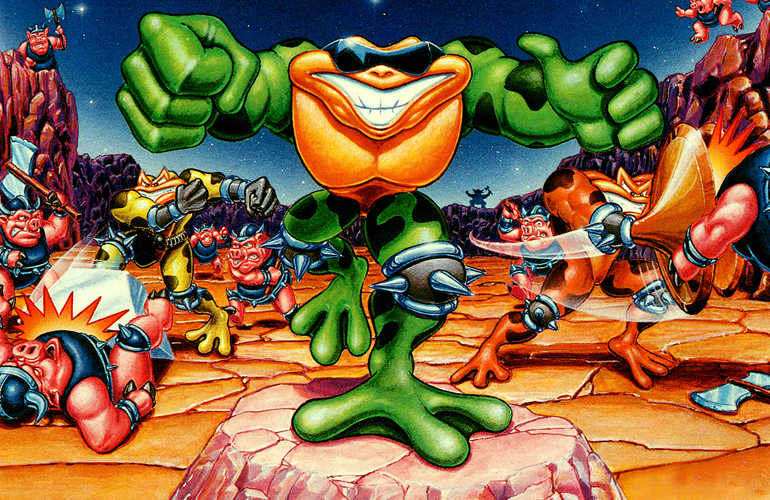
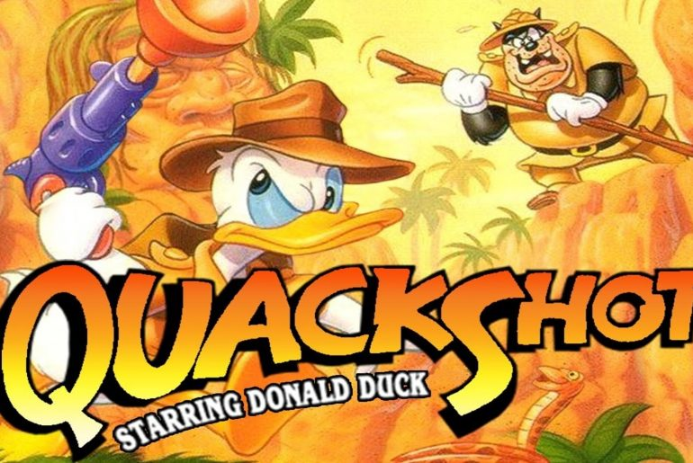

Super Mario Bros 3
Um dos maiores sucessos da franquia!

Sonic the hedgehog 2
Um dos maiores sucessos do MegaDrive!

Castle of Illusion
Game incrível, vale a pena jogar denovo!

Pacman
Quem nunca ouviu falar desse grande clássico?

Megaman
Um clássico!!!

Battletoads
Um game desafiador!

Previous
Next
Quackshot
Game fantástico! Aventuras incríveis